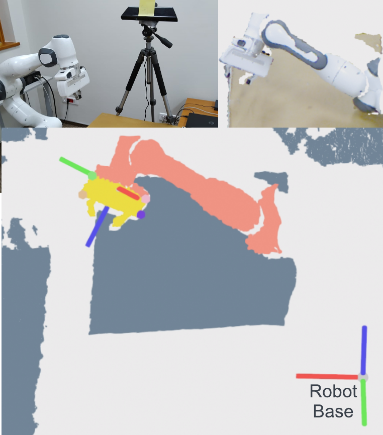

View the Project on GitHub bcsefercik/robot-camera-calibration

Traditional approaches to extrinsic calibration use fiducial markers and learning-based approaches rely heavily on simulation data. In this work, we present a learning-based markerless extrinsic calibration system that uses a depth camera and does not rely on simulation data. We learn models for end-effector (EE) segmentation, single-frame rotation prediction and keypoint detection, from automatically generated real-world data. We use a transformation trick to get EE pose estimates from rotation predictions and a matching algorithm to get EE pose estimates from keypoint predictions. We further utilize the iterative closest point algorithm, multiple-frames, filtering and outlier detection to increase calibration robustness. Our evaluations with training data from multiple camera poses and test data from previously unseen poses give sub-centimeter and sub-deciradian average calibration and pose estimation errors. We also show that a carefully selected single training pose gives comparable results.